El hombre , que iba armado y pidió hablar con su psiquiatra , retenía anoche a 24 de los alumnos de una escuela infantil.
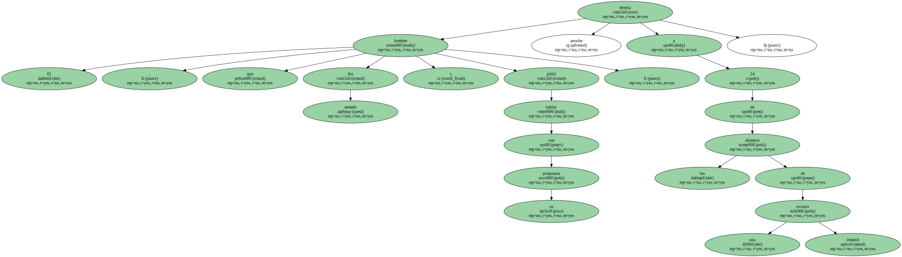Un desequilibrado armado hasta los dientes secuestró a primera hora de la tarde de ayer a 46 alumnos de una escuela infantil y a dos de sus educadores , en la apacible localidad luxemburguesa de Wasserwilling , próxima a la frontera alemana.
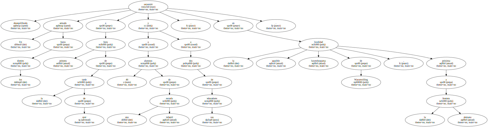El secuestrador , argelino , había liberado anoche a 22 de los pequeños.
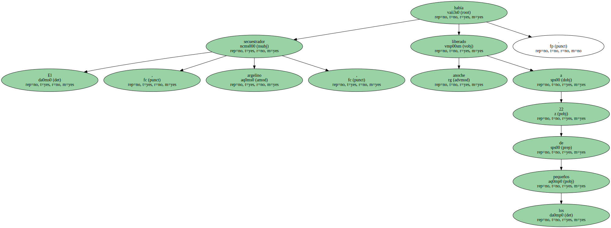El enajenado reclamó a la policía luxemburguesa un avión de 15 plazas para volar esta mañana a Libia.
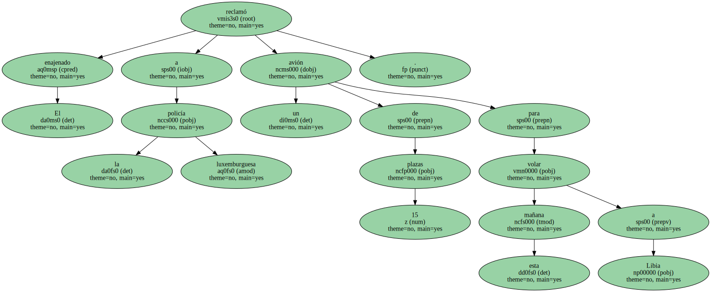El objetivo del secuestro sería recuperar a sus hijos , de los que fue separado hace tres años cuando fue expulsado del país.

El secuestro comenzó a las 15.30 horas , cuando un hombre de 45 años , armado , según diferentes testigos , con una pistola , una granada de mano y un cuchillo , irrumpió en la escuela infantil y secuestró a los niños y sus educadores.
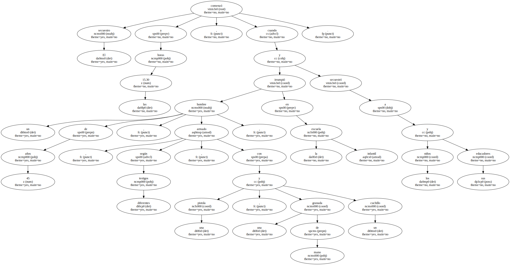Al tener conocimiento de los hechos , la policía rodeó las instalaciones escolares con un dispositivo de seguridad.
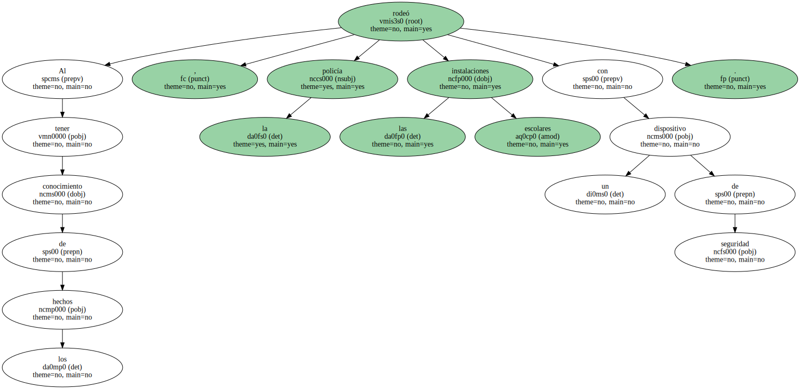Un miembro del equipo de psicólogos de las fuerzas de seguridad comenzó a negociar con el secuestrador.
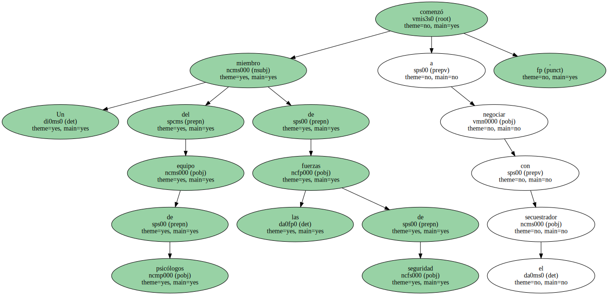Simultáneamente , un grupo de psicólogos de Protección Civil se hizo cargo de los padres de los pequeños para mantenerlos alejados de la escuela.
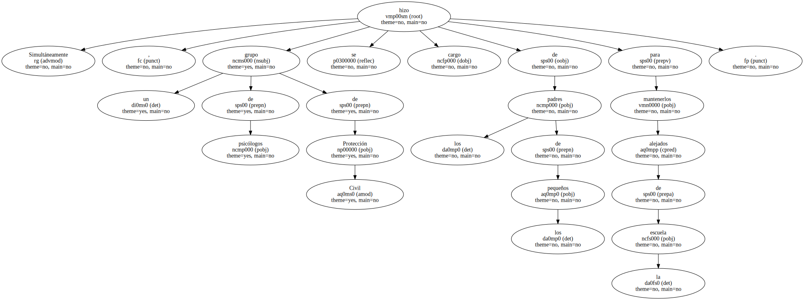El individuo sufre al parecer desequilibrios mentales y , según las primeras informaciones , pidió poder hablar con su psiquiatra.
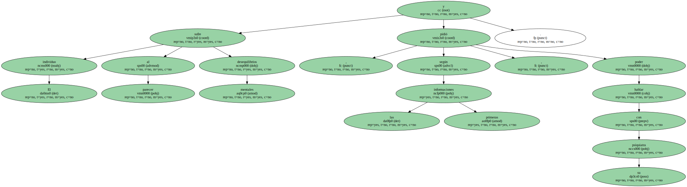El secuestrador aceptó a las 19.20 horas liberar a un grupo de niños , que pudieron salir sanos y salvos.
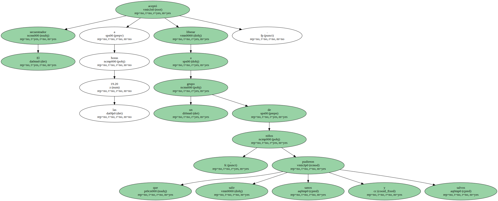Ninguno de ellos había sufrido ningún daño físico , ni ninguna herida , aseguraron fuentes oficiales.
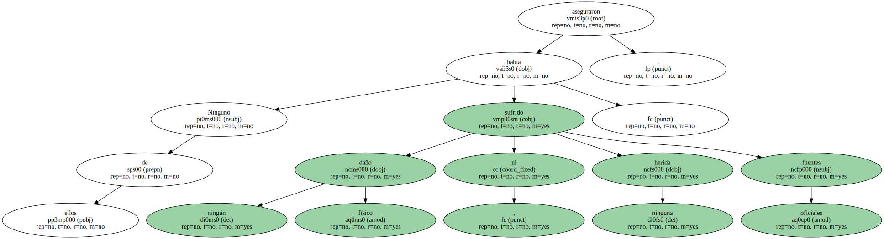Poco después liberó a otros dos grupos.
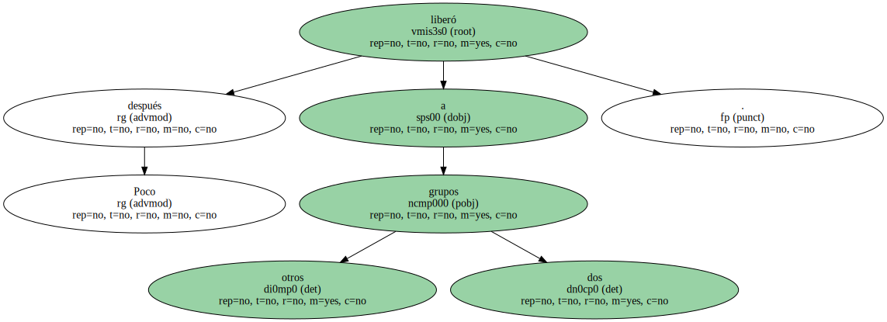Dos de los niños que seguían retenidos precisaban medicación por asma.
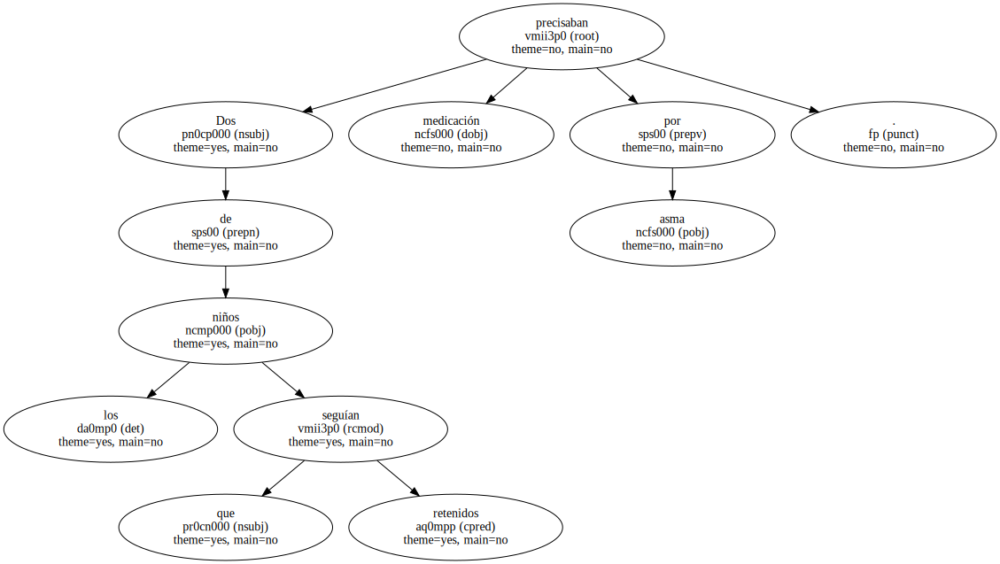La policía luxemburguesa continuaba anoche pacientemente las conversaciones con el secuestrador , con la esperanza de lograr un desenlace pacífico del secuestro.
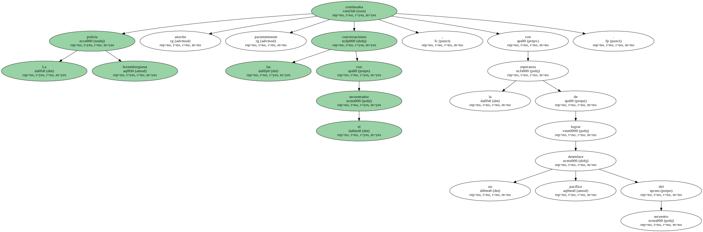No obstante , un grupo de acción especial de la policía se encontraba junto a la escuela para intervenir de inmediato en cualquier momento que el secuestrador ponga en peligro la vida de los rehenes.
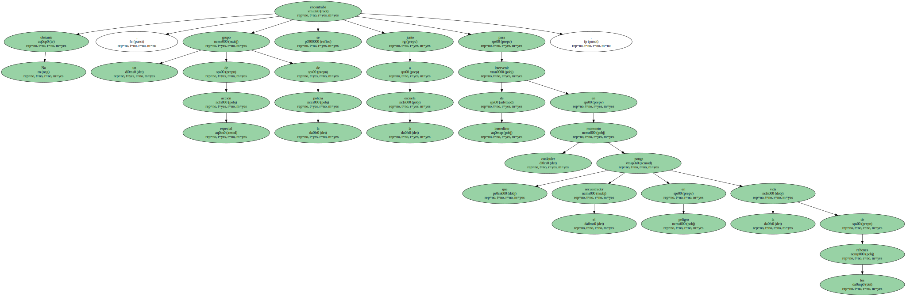